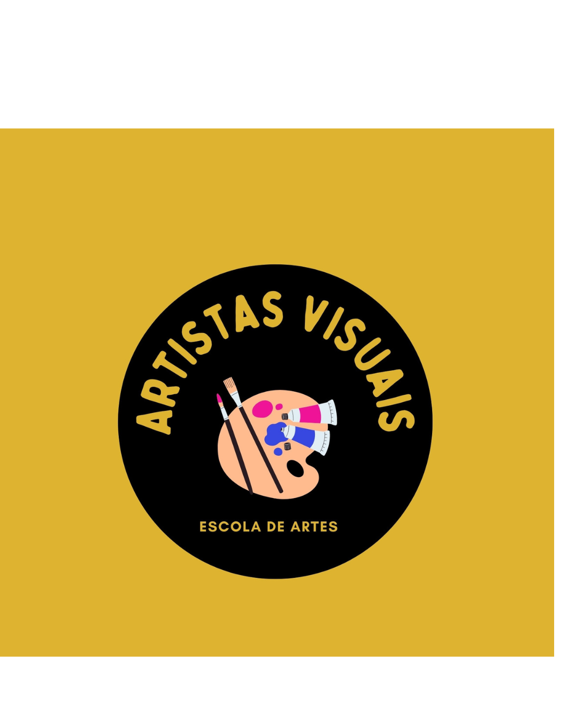

Arte no Design Digital
]O design digital é a criação de produtos, interfaces e conteúdos visuais feitos exclusivamente para telas e ambientes virtuais. Ele une estética, tecnologia e usabilidade para facilitar a interação das pessoas com o mundo digital para resolver problemas de comunicação e melhorar a experiência do usuário em dispositivos eletrônicos e Tornar a navegação intuitiva, atraente, acessível e funcional.
Por: Mateus